遊びで植物を育てよう
2013/04/07
梨の花が咲いていました。
まだ一度も実をつけたことない梨に花が咲いていました。
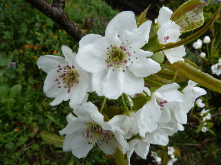
これ１種類１本しかないです。
なので、実をつけるのは難しいのかな？
ネットで検索してたら、違う品種のものを受粉するような事が書いてありました。
【4月TOP】
【日記TOP】
【園芸TOP】
2013/04/07
プルーンの花はなんか寂しい。
小さくて薄い花ですね。
地味だ。
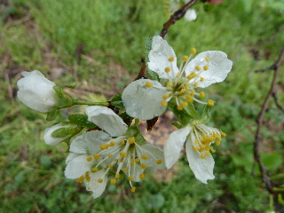
我が家のこの木は、今年は花の数も少ない気がする。
【4月TOP】
【日記TOP】
【園芸TOP】
2013/04/13
グミの花って変わった形ですね。
食べないので関心がなかったですが、グミの花が沢山咲いていました。

ちょっと変わった格好ですよね。
もっと美味しければ食べるんだけどなー。
今ねっとで調べたら、茱萸はビタミンEが沢山含まれていて、体にいいそうです。
今年は何かに活用したいです。
【4月TOP】
【日記TOP】
【園芸TOP】
2013/04/13
サクランボの花が咲きました。
何年か前に買ったサクランボの木ですが、今年初めて花が咲きました。
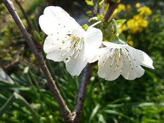
白いんですね。
ちょっとしか咲いていないので、実は期待できないかな。
来年沢山咲くといいな。
【4月TOP】
【日記TOP】
【園芸TOP】
2013/04/13
リンゴの蕾は可愛い。
りんごに小さい蕾が出来ていました。
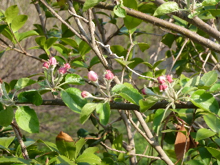
小さくて赤い蕾が並んでいるんが可愛いです。
見てて、なんか和みました。
【4月TOP】
【日記TOP】
【園芸TOP】
2013/04/13
イチゴもクサイチゴも花が咲いています。
露地物の苺が咲きだしました。
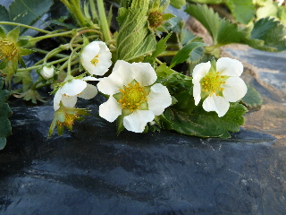
ゴールデンウィークには食べれるかな？
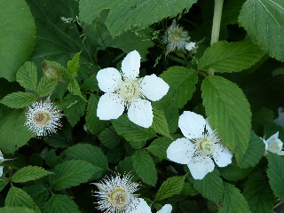
勝手に生えてるクサイチゴも花が咲いてました。
勝手に生えてるものなので、実が大きくならなかったりします。
美味しいんですが、ちゃんと育てようとは何故か思わないです。
【4月TOP】
【日記TOP】
【園芸TOP】
2013/04/13
アスパラの収穫が始まりました。
アスパラが地面からドンドン出てきます。
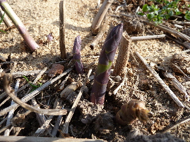
ゆでるだけても食べれるので、使いやすい食材ですよね。
【4月TOP】
【日記TOP】
【園芸TOP】
2013/04/20
リンゴの花が咲きました。
花が咲きました。
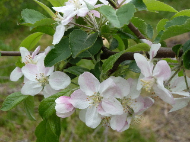
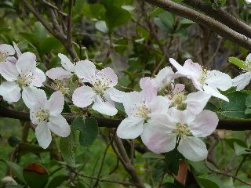
上と下ではリンゴの種類が違いますが、見た目は同じですね。
筆で受粉がちゃんと出来たかな？
【4月TOP】
【日記TOP】
【園芸TOP】
2013/04/20
新玉だ。
玉葱を少し収獲しました。
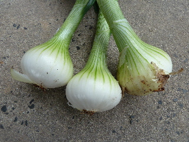
まだ少し小さいです。
甘くて美味しい新玉葱です。
【4月TOP】
【日記TOP】
【園芸TOP】
2013/04/20
ニラを収穫しました。
ニラが育っていたので、収穫しました。
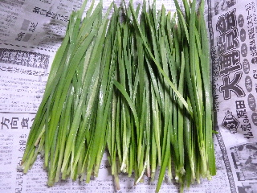
木の下とかでも良く育っていいですね。
ちょっとした隙間に植えています。
【4月TOP】
【日記TOP】
【園芸TOP】
2013/04/28
イタリアンパセリに花が付きそう。
温かくなって急速に大きくなったパセリですが、もうすぐ花が咲きそうです。
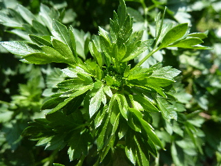
でも花咲いたら終わっちゃうんだったっけ。
なので、今日は沢山収穫しました。
【4月TOP】
【日記TOP】
【園芸TOP】
2013/04/28
庭のボタンは絶好調
ボタンの時期ですね。
今年はボタンを見に出かける予定がないので、家のボタンをしっかり見ます。
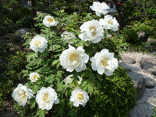
ボタンは派手ですね。
毎年咲いていますが、毎年「おー！派手だ！、立派だ！」って思います。
【4月TOP】
【日記TOP】
【園芸TOP】
2013/04/28
もうちょっとで苺が食べれそう。
苺が大きくなってきました。
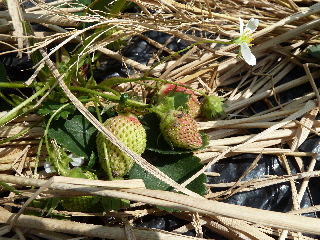
赤みがちょっと入りましたね。
もう何日かで完熟です。
楽しみです。
過去の日記
【2024年4月の日記】
【2023年4月の日記】
【2022年4月の日記】
【2021年4月の日記】
【2020年4月の日記】
【2019年4月の日記】
【2018年4月の日記】
【2017年4月の日記】
【2016年4月の日記】
【2015年4月の日記】
【2014年4月の日記】
【2013年4月の日記】
【4月TOP】
【日記TOP】
【園芸TOP】
畑仕事じゃないよ。
【おいしいものを食べよう。】【たくさん寝よう。】
【ソロ活をしよう!】【季節感のあることをしよう。】【動画視聴はほどほどに。】【当サイトの全てのコンテンツは無断転載禁止です。】